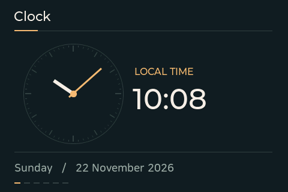

책상 위에 두는 3.5인치 터치 시계. 좌우로 넘겨 날씨와 시세를 확인하고, 타이머와 집중 시간을 조절하세요. 마지막 화면에는 유튜브 구독자 수가 표시됩니다.

OBI는 마끼다 배터리 진단용, Deskgear는 탁상 디스플레이용입니다. 같은 JC3248W535에서 두 펌웨어를 각각의 슬롯에 보관하고 재부팅으로 전환할 수 있습니다.
OBI로 돌아갈 때는 Deskgear의 설정 → 펌웨어 업데이트에서 반대편 슬롯에 OBI가 표시되는지 확인하고 선택하세요. OBI 설치 파일과 사용법은 MAYDAY OBI ↗
빈 보드 또는 복구가 필요한 보드용입니다. 통합 이미지는 기존 슬롯과 설정을 덮어쓸 수 있습니다. 배터리를 분리하고 PC의 Chrome 또는 Edge에서 데이터 USB 케이블로 연결하세요.